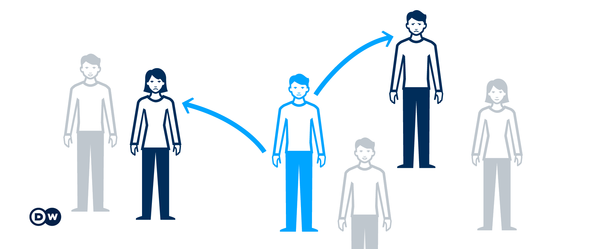

Reproduction number

Figure from Corona confusion: What do all the numbers mean?, by Deutsche Welle.
The reproduction number, \(R\), is the average number of secondary cases of disease caused by a single infected individual over his or her infectious period (Cori et al., 2013).
Basic reproduction number \(R_0\)
Definition 1 \(R_0\) (pronounced /R naught/) is the average number of individuals infected by each infectious individual in a fully susceptible population (Vegvari et al., 2022). In short, \(R_0\) is the \(R\) in a fully susceptible population, the maximum \(R\) in a population.
The basic reproduction number is sometimes called the basic reproductive number or basic reproductive ratio (Driessche, 2017).
Effective reproduction number \(R_e\)
Definition 2 \(R_e\) is the average number of secondary cases generated by each infectious individual throughout their infectious period in a population where not all individuals are susceptible.
Let \(s\) be the proportion of the population that is susceptible.
\[R_e = s \times R_0\]
Effective reproduction number at time \(t\) \(R_t\)
Definition 3 \(R_e(t)\) (Knight & Mishra, 2020) or \(R_t\) is the average number of secondary cases generated by one infected person at time \(t\) during the outbreak, where some individuals may no longer be susceptible (Gostic et al., 2020).
A public health control strategy will end an outbreak if it can keep \(R_t\) below 1. The level of immunity at which \(R_t = 1\) is the herd immunity threshold (Vegvari et al., 2022).
At the beginning of an outbreak, we can estimate \(R_0\) when the whole population is fully susceptible. As the outbreak progresses, the number of susceptible individuals decreases, leading to a decline in \(R_0\). This adjusted value is referred to as \(R_t\) (if we want to measure at each time \(t\)). At the peak of the epidemic curve, \(R_t = 1\). After this peak, \(R_t\) continues to decrease, resulting in a decline in the number of new cases and the epidemic curve going down.
\(R_t\) can be defined in 2 ways:
- Instantaneous reproduction number: the average number of individuals someone infected at time \(t\) would infect if conditions remained unchanged (Green et al., 2022).
- Case reproduction number: the average number of people an individual infected at time t actually infects, which will depend on changes in policy or behavior over the period of that cohort’s infection, and can only be estimated in retrospect (Green et al., 2022).
Instantaneous reproduction number \(R_t^i\)
Figure illustrates the Cori method (Gostic et al., 2020).
Measures transmission at a specific point in time (Gostic et al., 2020). The instantaneous reproduction number quantifies the number of new infections at a single point in time \(t_i\) (blue arrow), using the number of infections in the previous generation (green arrows) and their current infectiousness (green curve) (Gostic et al., 2020). The analyses can be done near real-time.
Methods to estimate instantaneous reproduction number includes Cori and colleagues (Cori et al., 2013) (the best for near real-time estimation (Gostic et al., 2020)), and Bettencourt and Ribeiro (Bettencourt & Ribeiro, 2008) (use with caution because they implicitly assume the generation interval follows an exponential distribution, as in SIR model, which does not include alatent period).
Case reproduction number \(R_t^c\)
Figure illustrates the Wallinga and Teunis method (Gostic et al., 2020).
Measures transmission by a specific cohort of individuals (Gostic et al., 2020). A cohort is a group of individuals with the same date of infection or the same date of symptom onset. The case reproduction number is the average number of new infections that an individual who becomes infected on day \(t_i\) (green arrows in B) or symptomatic on day \(t_s\) (yellow arrows in C) will eventually go on to cause (blue downward arrows in B and C). It is a more natural choice for analyses that consider heterogeneity among individuals (Gostic et al., 2020).
Methods to estimate instantaneous reproduction number includes Wallinga and Teunis method (Wallinga & Teunis, 2004).
Growth rate \(r\) and reproduction number \(R\)
Growth rate \(r\) and reproduction number \(R\) are basically the same. \(r\) is used in continuous time and \(R\) is used in discrete time.
Growth rate \(r\)
The rate at which new cases are arising (Anderson et al., 2020). It can be a positive number (new infections is increasing) or a negative number (new infections is decreasing).
The number of new infections at an increasing or decreasing exponential rate. It is dependent on the reproduction number and timescale between infections.
\[\frac{d_\text{newCases}}{dt}\]